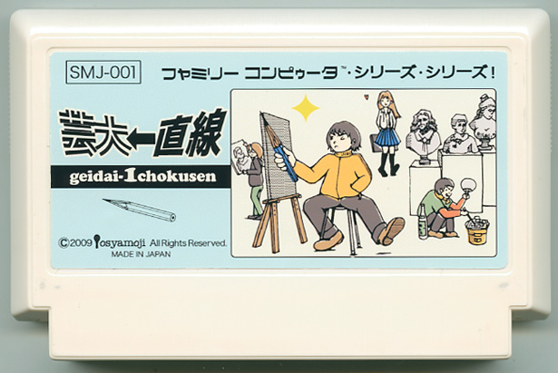

" 芸大一直線 "
渡邉佳純 / デザイナー
芸大一本で受験して二浪目の春を迎えた僕。 芸大への道はデッサンから！と、美術予備校でデッサンを描く毎日だ。 アトリエの隅でデッサンモチーフのはまぐりを勝手に焼き、酒の肴にする【タロー】（多年浪人生）の「酒買って来い」の声をかわし、正面に席をとる【ゲンエキ】（現役女子高生）の無防備な制服姿もものともせずに、石膏デッサンに集中しよう！ 大して見本にもならない【デモスト】（デモンストレーター）だが、ヤジを飛ばすと−100ptだから気をつけて！